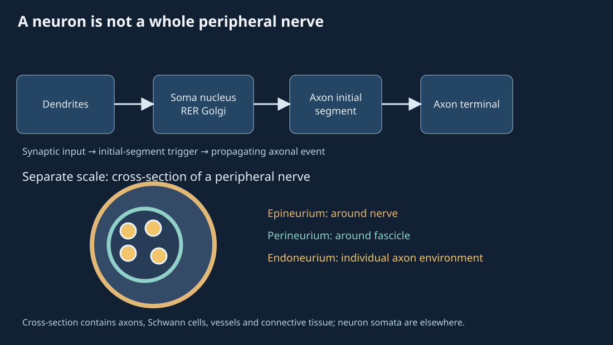
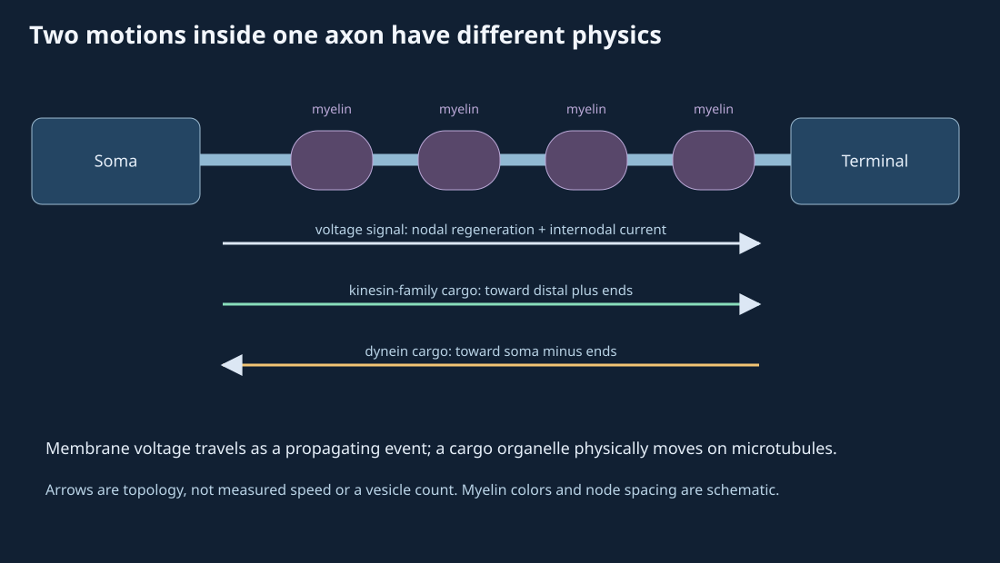
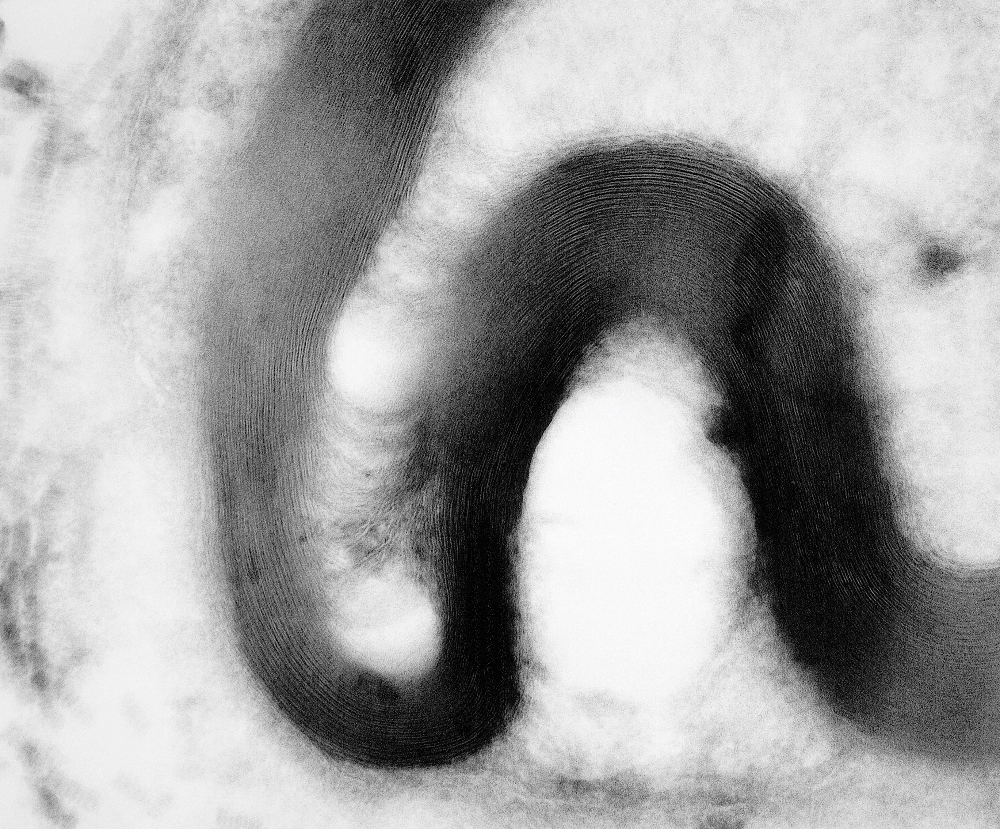
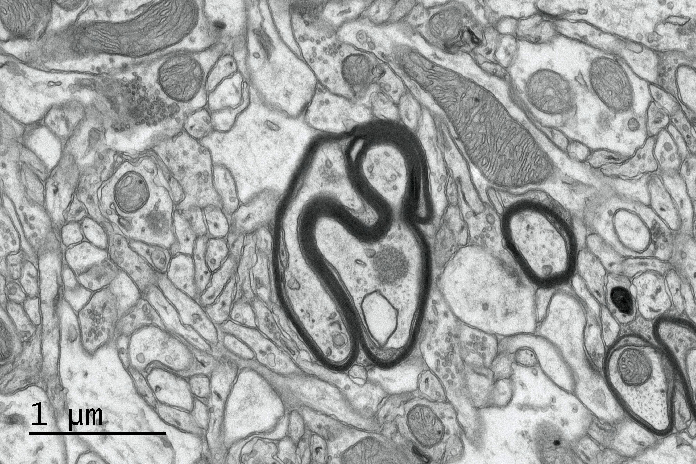
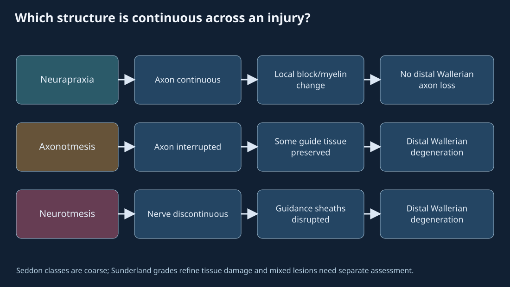
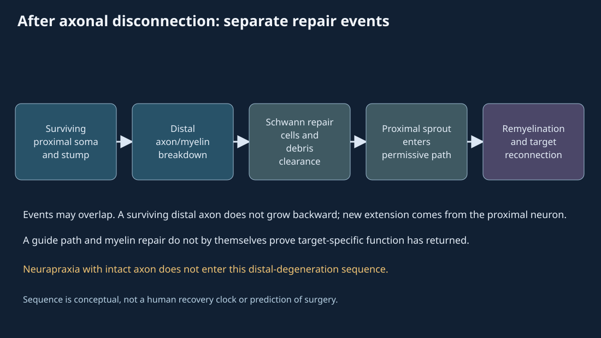

23. Neurons, axonal transport and nerve repair
A hand becomes weak after a peripheral nerve is compressed. Does the observation mean its axons have been cut? No. A focal conduction block can interrupt transmission while the axon remains continuous. An axon that is severed has a different distal fate, and even successful axon elongation does not by itself prove reconnection to the intended target. The first task is to identify which structure and which clock an observation concerns.
We will follow an illustrative long axon from its soma to a terminal and then compare a transient block with axonal disconnection. A membrane action potential travels as a propagated electrical event. Molecular cargo moves inside the axon along cytoskeletal tracks. A damaged nerve undergoes cell, glial and tissue responses over much longer intervals. Their speeds, mechanisms and evidence cannot be interchanged. The anatomical and injury diagrams below are original nonmetric constructions; the micrographs are prepared observations with narrower claims.
Lecture spine: official L54–55, all 32 assigned topics and both late activities. The sampled slide/caption audit is bounded: 8 contact sheets, 137 sampled stills and 24 selected native reopens, without continuous audio/video. The chapter corrects caption or slide claims where DNA replication is inserted into routine protein synthesis, transport motor direction is reversed, neurapraxia is made to cause distal Wallerian degeneration, Nissl material is said to concentrate, and CNS remyelination is declared impossible. The source handoff is private author evidence, not reader acceptance.
23.1 A neuron is a cell; a nerve is a tissue route L54 01:50
A neuron is a cell with specialized receptive, integrating and output domains. Dendrites and soma receive many inputs; the axon initial segment is a common spike initiation site after inputs have been integrated; the axon conducts output to terminals. This multipolar layout is representative, not a universal neuron silhouette. Dendritic receptors may be ion channels or metabotropic receptors linked to intracellular signaling, so receptor binding need not mean that the ligand is taken into the cell. Membrane signals and gene expression can both change a neuron's behavior, but on different scales.
The soma contains a nucleus, ribosomes, rough endoplasmic reticulum and Golgi apparatus. For a newly encoded protein, DNA is transcribed into RNA, and ribosomes translate messenger RNA into a polypeptide; sorting and transport then place many proteins where they function. Routine protein production in a postmitotic neuron does not require DNA replication. Some mRNAs can be translated locally in axons, and many transmitters are small molecules rather than newly translated proteins. The L54 10:40 spoken replication step contradicts the slide's transcription arrow. Neither the nucleus nor a vesicle motor synthesizes a protein merely by transporting it.


A peripheral nerve is a tissue bundle outside the central nervous system. The endoneurium is delicate connective tissue around individual axons and their Schwann-cell units; the perineurium forms a barrier around each fascicle; the epineurium invests the whole nerve and groups fascicles. The dorsal sensory root and ventral motor root join to form a mixed spinal nerve; the sensory cell bodies reside in a dorsal-root ganglion, not inside each fascicle cross section. Fascicular and endoneurial alignment can matter to regeneration because a growing axon must find a distal path, but a diagram of sheath layers is not a surgical instruction.
Neurons can also be described by shape and pathway role, and the two classifications answer different questions. Multipolar neurons have many processes; bipolar neurons include retinal interneurons; human primary somatosensory ganglion neurons are generally pseudounipolar, with a process that branches into peripheral and central arms. An afferent pathway carries information toward the central nervous system, an efferent pathway carries commands outward, and an interneuron operates within a circuit. None of these role words fixes a unique microscopic silhouette. Somatic motor and autonomic efferents also have different targets and circuit arrangements.
At the terminal: a membrane event becomes a chemical signal
At a typical chemical synapse, an action potential invades the presynaptic terminal. Depolarization opens voltage-gated Ca²⁺ channels; local Ca²⁺ binds a vesicle-fusion sensor such as synaptotagmin, while the SNARE machinery helps a primed vesicle fuse with the presynaptic membrane. Released transmitter diffuses across the cleft and binds postsynaptic receptors. Receptor current or metabotropic signaling then alters the postsynaptic cell. Ca²⁺ does not simply bind “SNARE” as a universal one-step trigger, and the presynaptic terminal is not the postsynaptic cell. At electrical synapses, gap-junction coupling is a different path; this vesicle sequence does not describe it.
Signal termination depends on transmitter and site: transporters can recapture transmitter into cells, extracellular enzymes can degrade some transmitters, and diffusion or glial uptake can contribute. It is inaccurate to make every released transmitter return by dynein to its originating soma. Vesicle membrane recycling at the terminal is also distinct from retrograde trafficking of selected organelles or signaling endosomes.
23.2 Three clocks share an axon but not a mechanism L54 12:26
A long axon must maintain distant membrane and terminals. Many neuronal microtubules have their plus ends oriented distally; kinesin-family motors commonly drive anterograde cargo movement toward distal axon, while cytoplasmic dynein commonly drives retrograde movement toward soma. Cargo adapters, track organization and local capture make this a useful directional rule, not a claim that one motor carries every object in every neuron. Mitochondria, membrane precursors, vesicular proteins and signaling endosomes are different cargo classes. A neurotrophin-bound signaling endosome or injury signal can return toward the soma; outward delivery of replacement components does not require calling dynein an outward motor. The lecture's later reversal is corrected here.
Some pathogens exploit axonal entry and transport. In compartmentalized embryonic mouse dorsal-root-ganglion cultures, rabies particles have been observed in p75NTR-associated retrograde vesicles; that observation does not establish the same receptor, direction, nuclear entry or outcome for poliovirus, herpesvirus and every clinical infection. These viruses also differ in genome and replication strategy. The source's common “all fuse with the nucleus and change genes” route is therefore not retained. Infection is not a model parameter in the chapter's transport clock.
Myelin changes electrical conduction by reducing membrane capacitance and leak along internodes; local current can spread under an internode, while voltage-gated channels at exposed nodes regenerate the action potential. “Saltatory” names this nodal pattern; the whole impulse does not teleport across an empty gap, and a protein vesicle is not propelled to the next node by each spike. Schwann cells form myelin in peripheral nerves; oligodendrocytes form it in the CNS. Conduction depends on fiber diameter, temperature, myelination and path, so a printed 120 m/s or 0.5–10 m/s class comparison cannot serve as a universal constant.

Static order: initial-segment spike → internodal current → nodal regeneration; separately, kinesin-family outward cargo and dynein inward cargo travel along microtubules.


A dimensional contrast, not a patient timetable
For one deliberately imposed \(d=0.6\,\mathrm{m}\) path, suppose a voltage front has an illustrative speed \(v_e=60\,\mathrm{m\,s^{-1}}\), a cargo marker \(v_c=1\,\mathrm{\mu m\,s^{-1}}\), and a bare elongation quotient uses \(v_g=1\,\mathrm{mm\,day^{-1}}\). These are chosen comparison inputs, not measurements of the same fiber or a recovery prediction. The elementary quotients are
The first quotient addresses electrical travel over a specified path; the second addresses an idealized directed cargo run without pauses, reversals or delivery time; the third is only distance divided by an assumed elongation rate. Axonal repair also requires a viable proximal neuron, guidance through tissue, target survival, matching, remyelination and functional integration. Consequently 600 days is not an estimate of when strength returns. A zero distance gives zero travel time in this arithmetic, while zero or negative speed is outside its domain. The reproducible calculator checks units, nonfinite values and that boundary.
23.3 Injury class is about continuity, not the dramatic appearance of a cause L55 02:24
A cut, crush, stretch, compression, metabolic insult or infection can damage a nerve, but the cause word alone does not reveal the microscopic grade. The useful first questions are whether conduction occurs, whether axons remain continuous, whether connective guide structures remain, and whether targets remain viable. A mixed nerve can have fibers at different grades. The three Seddon labels below are coarse patterns; Sunderland grades subdivide especially the axon-disrupting range by connective-tissue integrity. Symptoms alone cannot settle an individual's grade.
| Class | Axon and guide path | Distal axon fate | Inference limit |
|---|---|---|---|
| Neurapraxia | Axon remains continuous; focal conduction block, sometimes local myelin disturbance | No distal Wallerian degeneration from axonal disconnection | Recovery varies; a short compression anecdote does not prove grade or deadline |
| Axonotmesis | Axon is disrupted; some distal connective guidance may remain, to varying Sunderland degrees | Distal Wallerian degeneration follows axonal separation | Distance, alignment and target viability matter; intact endoneurium is not universal |
| Neurotmesis | Severe/complete nerve discontinuity in the canonical class, with guide path disrupted | Distal Wallerian degeneration follows axonal separation | Repair evaluation may be needed; a sketch cannot decide treatment or outcome |
Wallerian degeneration describes the distal axon segment's degeneration after it loses continuity with the soma. The distal segment does not regrow itself into a new neuron. In neurapraxia the axon remains continuous, so calling its focal conduction block a Wallerian sequence changes the class's definition. This is the central correction to L55 14:02. Where the axon is disconnected, proximal retraction and sprouting, distal fragmentation, macrophage recruitment and Schwann-cell reprogramming can overlap in time. There is no mandatory serial rule that a visible cell-body response must finish before distal clearance begins.


An injured soma may show chromatolysis: cell swelling, an eccentric nucleus and dispersal of Nissl substance, which represents rough ER/ribosomal material in light-microscopic preparations. “Chromatolysis” is not Nissl material concentrating at the nucleus, and it is not a required visual prerequisite to every distal event. In the distal disconnected stump, axon and myelin fragment while phagocytes and repair-state Schwann cells participate in clearance. In mouse nerve-injury experiments, Arthur-Farraj and colleagues showed that c-Jun-dependent Schwann-cell reprogramming supports a repair phenotype and regeneration. The experimental result supports the distinction between surviving/reprogrammed Schwann cells and a source claim that nearly all Schwann cells simply die; it is not a guaranteed human outcome.
New sprouts arise from a surviving soma-connected proximal axon. A permissive distal Schwann-cell path, often described as a Band of Büngner, can guide a sprout; later myelin production is distinct from the axon's elongation. The axon must still connect to a suitable target, and useful function depends on the circuit and muscle or receptor state. A schematic of one sprout traversing a gap is a conditional example, not evidence that every severed nerve reconnects. Lesion distance to target, distance from soma, degree of tissue disruption and time each matter, but there is no simple “near soma means no Schwann cells and death” rule. Nor can the rough 1–3 mm/day elongation shorthand, when quoted, be converted into a patient-specific recovery deadline.
The late L54 activity asks which neuron sends a signal faster. Answer it only after specifying axon diameter, myelination, path length, temperature and intervening synapses; a visibly larger drawing does not determine latency. The late L55 questions ask which class has Wallerian degeneration, which tends to have the least structural disruption, and which often needs repair evaluation. Axonal disconnection in axonotmesis or neurotmesis permits distal Wallerian degeneration; neurapraxia is generally the least disruptive canonical class; severe neurotmesis may require specialized evaluation. Wallerian degeneration is a consequence of disconnected axons in either PNS or CNS, with different clearance and regrowth environments, so the caption's forced PNS-versus-CNS dichotomy is false.
23.4 CNS repair has limits, not a universal impossibility L55 29:59
The adult peripheral and central nervous systems differ in glia, extracellular environment, immune response and long-distance pathway organization. Peripheral Schwann repair cells can supply a guidance track after some injuries; the CNS does not provide the same stereotyped distal nerve tube. Central lesions can also include myelin debris, inflammatory responses, extracellular inhibitors and a complex astrocytic reaction. These factors constrain long-tract regrowth, but they do not justify the statement that the CNS never repairs anything. Plasticity, local sprouting and remyelination are distinct from regenerating a transected spinal projection all the way to its former target.
Oligodendrocyte-lineage cells can form new myelin in at least some CNS lesions. A human multiple-sclerosis cortical tissue study reports active BCAS1-positive oligodendroglial internode formation and remyelinating lesions; its human prepared tissue is evidence against the lecture slide's categorical “oligodendrocytes cannot remyelinate.” It does not show that every lesion remyelinates, establish functional recovery in every patient, or demonstrate full spinal-axon regeneration after transection. The accompanying mouse experiments and human tissue have different evidence roles. Astrocytes are themselves CNS glia; saying that the PNS has “few astrocytes” does not explain the mechanistic comparison.
The observed mouse cortex TEM in Figure 23.3 shows myelinated axon profiles, not when their sheaths formed. This is a general lesson in reading microscopy: a static membrane layer can identify structure at a prepared site and scale, but a repair rate or lineage requires temporal, molecular or experimental evidence. Likewise a nerve section alone cannot tell whether an apparently continuous profile conducts through a lesion or has reconnected to the original target.
23.5 Six worked investigations
23.1 Outward material, inward information
A newly synthesized membrane protein is packaged in the soma and sent toward a distant terminal; a receptor-bound signaling endosome returns toward the soma. Name the exemplar motor direction for each and explain why neither is the action potential itself.
Worked solution
In the usual plus-end-out axonal region, a kinesin-family motor can move the outward protein-containing cargo anterogradely. Cytoplasmic dynein can move the endosome retrogradely toward the soma. Adapters and cargo identity determine actual motor engagement, so this is a directional exemplar rather than a universal rule for every particle. An action potential is regeneration of membrane voltage along the axon; it need not carry that protein as a particle from soma to terminal on each spike.
23.2 Dimensional comparison
Use the illustrative 0.6 m path and imposed speeds 60 m/s for voltage, 1 µm/s for cargo, and 1 mm/day for a bare elongation quotient. Calculate the three travel quotients and identify which one could predict return of function.
Worked solution
Voltage: 0.6 m divided by 60 m/s is 0.01 s. Cargo: 1 µm/s is 10−6 m/s, so the quotient is 600,000 s or 6.944 days. Bare elongation: 0.6 m is 600 mm, so the quotient at 1 mm/day is 600 days. None predicts functional recovery. The quotient ignores latency, motor pauses, axon survival, tissue guidance, target reconnection, remyelination and circuit integration; the input rates are synthetic.
23.3 From spike to clearance
Put these events in a sensible sequence for a chemical synapse: transmitter binds a postsynaptic receptor, presynaptic voltage-gated Ca²⁺ channels open, a spike invades the terminal, vesicle fusion releases transmitter, transmitter is cleared. State the Ca²⁺ sensor and one reason the final step cannot be universalized.
Worked solution
A presynaptic spike arrives; depolarization opens voltage-gated Ca²⁺ channels; local Ca²⁺ engages a sensor such as synaptotagmin in the primed fusion system; vesicle fusion releases transmitter; transmitter binds postsynaptic receptors; clearance follows. SNARE proteins support fusion but are not interchangeable with the Ca²⁺ sensor. Clearance can involve different transporters, enzymes, diffusion and glial uptake depending on transmitter and site, so dynein-to-soma is not the generic final step.
23.4 Three nested coverings
A histological section labels a sheath around one axon-associated unit, a boundary around a fascicle, and an outer sheath around a whole peripheral nerve. Assign the three names. Does a fascicle cross section contain the cell bodies of all its axons?
Worked solution
Endoneurium is associated with the individual axon/Schwann-cell unit; perineurium encloses the fascicle; epineurium encloses and binds the whole nerve. The fascicle contains axonal processes and supporting tissues. Its neuronal somata may lie in a dorsal-root ganglion or central nervous system and are not thereby inside this peripheral cross section. A structural sheath label alone does not grade an injury.
23.5 The continuity test
Case A has a focal conduction block but continuous axons. Case B has disrupted axons with some distal connective guidance. Case C has a severe complete nerve discontinuity. Classify them; state where distal Wallerian degeneration follows. For B, name the source of any new sprout.
Worked solution
A is the canonical neurapraxia pattern; its axons remain continuous, so distal Wallerian degeneration from disconnection is not expected. B is an axonotmesis pattern; C is canonical neurotmesis. In B and C, disconnected distal axons undergo Wallerian degeneration, although actual mixed injuries require finer assessment. A new sprout must come from a surviving proximal axon still connected to its soma, not from the dead distal segment. Connective guidance in B may help but does not guarantee an original-target connection or functional recovery.
23.6 What a micrograph can refute
A mouse CNS TEM shows a myelinated axon; a human MS cortical tissue study identifies active oligodendroglial internode formation. Which observation refutes “oligodendrocytes cannot remyelinate,” and which conclusion about long-tract regeneration remains unsupported?
Worked solution
The static mouse TEM demonstrates a myelinated profile but cannot date myelin formation. The human lesion study's cellular markers and lesion context provide evidence of active oligodendroglial remyelination, refuting the categorical impossibility claim within its tissue and disease scope. Neither observation demonstrates that a transected spinal axon traverses an entire lesion, reconnects with its original target and restores function. Remyelination and long-distance axon regeneration are different outcomes.
23.6 Reproduce and challenge the clock construction
Run python code/ch23_clocks.py to reproduce the three unit-converted quotients and domain checks. Change the distance and one imposed speed at a time, then ask what the result measures. The code accepts only finite nonnegative distance and strictly positive finite speed; it computes distance divided by speed, not a physiological recovery law. A useful sensitivity check is doubling distance: each quotient doubles under its fixed-speed assumption, while actual repair need not scale linearly because the omitted conditions can dominate.
In Figure 23.2, switch voltage to cargo and compare the text and arrows before playing. In Figure 23.4, first compare the three injury alternatives, then switch to conditional repair. Playback time is presentation time, not conversion to milliseconds, days or months. Seek a phase to keep the diagram and explanation on the same state. Use the static print diagrams to recover the same compartment distinctions without motion.
23.7 Sources and evidence limits
The chapter follows both complete official L54–55 publisher captions through the closing questions and uses the bounded still audit detailed in the private source handoff. Caption and slide assertions are checked against anatomy and owning research rather than treated as clinical instructions. The mouse Schwann repair-cell experiment, mouse-DRG rabies transport experiment, and human MS cortical remyelination study were accessed as full text through Europe PMC XML after direct PMC pages were challenged; their specimens and endpoints are stated at point of use. Injury-classification and synaptotagmin sources were available as indexed excerpts/abstracts, not verified full methods. Their narrower access depth is in the author research ledger.
The Wellcome records for myelin TEM and mouse cortical TEM supplied original image bytes, creator/credit, CC BY 4.0 and preparation descriptions. Pixel provenance and licence/credits record the exact native files and limits. The small 217×238 peripheral DRP2 image is recorded in provenance but omitted as a main figure because its pixels do not support a detailed section or species claim. Original SVGs are nonmetric diagrams; their colors and animated positions are explanatory, not measured tissue appearance, conduction speed or regeneration kinetics. All clinical labels here are mechanisms and classification concepts, not diagnosis, treatment advice or prognosis.